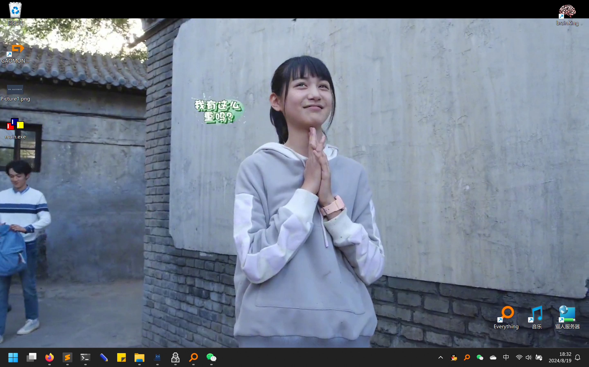

首次编辑：24/8/19/18:13
最后编辑：24/8/19/
涉及的技术：
- win32 api编程
- C语言
原理是用视频播放器播放视频，然后把播放视频的窗口放到桌面上。（讲得很简单，详细可以参考偶尔老师的视频）
因为播放器窗口自己也需要初始化，而CreateProcess这个函数是同步的，并不等待播放器窗口创建之后才完成，所以如果不进行优化，可能会出现主程序的流程跑完了，播放器进程才加载好的情况，所以需要等待播放器窗口创建完毕之后，主进程再把播放器的窗口放到桌面窗口上。偶尔老师进行的操作是，直接在主进程里Sleep了一段时间。
但这样的控制不太精准，所以我对这部分逻辑进行了优化：先找到播放器窗口，找到之后确定窗口已经变成全屏之后，才将播放器窗口放置于桌面上。
/*
编译器：MinGW-w64 gcc
编译方式：gcc source.c -luser32 -lkernel32
*/
#include <windows.h>
BOOL CALLBACK EnumWindowsProc(_In_ HWND hwnd, _In_ LPARAM Lparam)
{
HWND hDefView = FindWindowExW(hwnd, 0, L"SHELLDLL_DefView", 0);
if (hDefView != 0) {
// 找它的下一个窗口，类名为WorkerW，隐藏它
HWND hWorkerw = FindWindowExW(0, hwnd, L"WorkerW", 0);
ShowWindow(hWorkerw, SW_HIDE);
return FALSE;
}
return TRUE;
}
int main()
{
SetProcessDPIAware();
int screen_x = GetSystemMetrics(SM_CXSCREEN);
int screen_y = GetSystemMetrics(SM_CYSCREEN);
WCHAR lpParameter[512] = L"path/to/ffmpeg/bin/ffplay.exe \
\"path/to/video.mp4\" -noborder -fs -loop 0";
STARTUPINFOW si = {0};
si.cb = sizeof(si);
PROCESS_INFORMATION pi = {0};
if (CreateProcessW(NULL, lpParameter, 0, 0, 0, 0, 0, 0, &si, &pi))
{
HWND hFfplay = NULL; // 找到视频窗口
RECT rect;
while (!hFfplay){
hFfplay = FindWindowW(L"SDL_app", 0);
}
while (hFfplay) { // 等待窗口变成全屏
GetWindowRect(hFfplay, &rect);
// rect 现在包含了窗口的尺寸信息
int width = rect.right - rect.left;
int height = rect.bottom - rect.top;
if ( width == screen_x && height == screen_y)
break;
}
HWND hProgman = FindWindowW(L"Progman", 0); // 找到PM窗口
SendMessageTimeout(hProgman, 0x52C, 0, 0, 0, 100, 0); // 给它发特殊消息
SetParent(hFfplay, hProgman); // 将视频窗口设置为PM的子窗口
EnumWindows(EnumWindowsProc, 0); // 找到第二个WorkerW窗口并隐藏它
}
return 0;
}

真不错，糖糖太可爱啦！
其实只要知道了在桌面放置窗口的原理2，剩下的事就只有播放视频了。本文的这个方案用了开源的ffmpeg中附带的简单播放视频的工具“ffplay”，ffplay是一个命令行下的可执行文件，所以在播放视频时需要创建ffplay进程，以创建子进程的这种方式来实现动态壁纸我认为还是十分不方便的，如果只是循环播放同一个视频自然十分容易，但若要循环播放某个文件夹下的所有视频（这也是我想要实现的功能，否则老是播同一个视频也是蛮单调的）实现起来将十分麻烦。加上最终也许还是要实现一个带有GUI的工具，调用子进程的方式我觉得还是不太可取。但ffplay并没有什么api提供调用，所以要想实现上述的功能，可能得再钻研钻研了。
B站，偶尔有点小迷糊，『教程』动态壁纸 原理揭秘 ↩
Code Project，Draw Behind Desktop Icons in Windows 8+ ↩